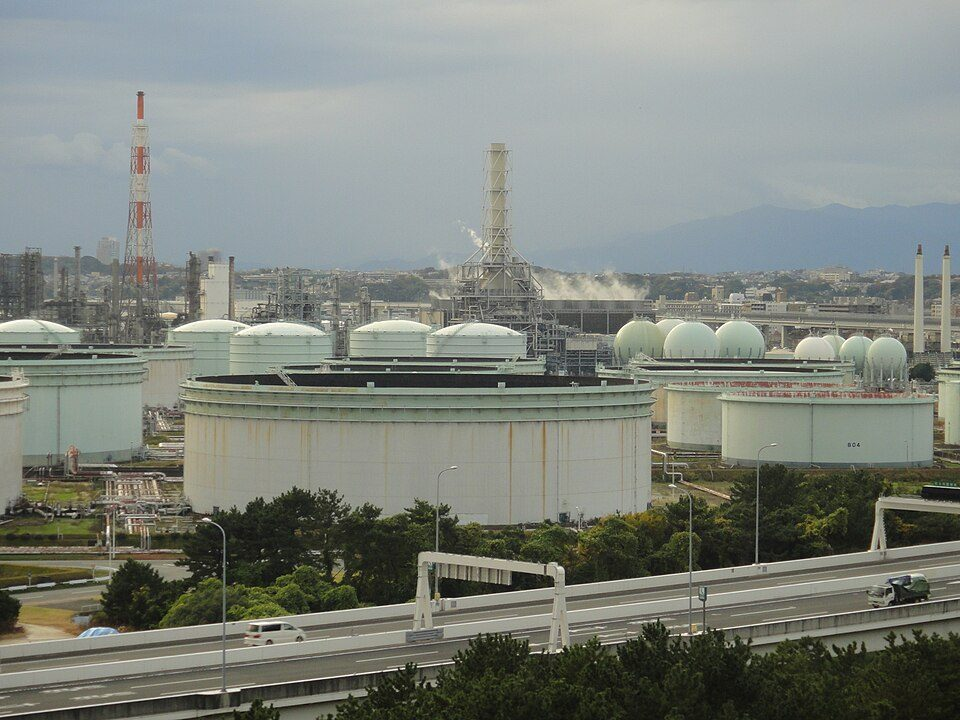
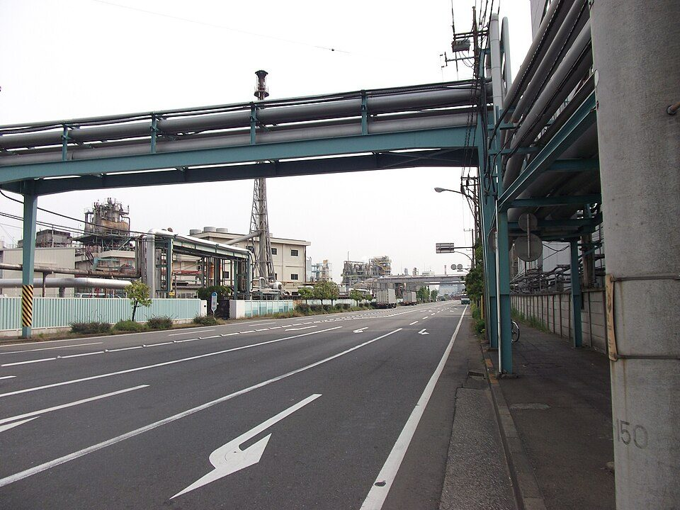

プラントエンジニアリングとは：EPCの仕組み、業界の規模と主な会社、仕事の流れと3D設計（2026年版）
要点まとめ
石油や天然ガス、化学品、医薬品、電気などをつくる大きな工場（プラント）を、設計から建設まで一括して引き受けるのが、プラントエンジニアリングの仕事です。この記事では、業界の仕組みと規模、主な会社、仕事の流れと職種、使われる3D設計の道具、資格と最近の動きを、エンジニアリング協会の発表と各社の公式資料でまとめました。特定の会社への就職や投資をすすめるものではありません。

プラントエンジニアリングとは
EPCは、設計・調達・建設をまとめて請け負うこと
EPCの前に、事業化調査（FS）と基本設計（FEED）がある
日揮ホールディングスは、自社の事業をEPC（Engineering・Procurement・Construction：設計・調達・建設）と説明し、その前に行うFS（事業化調査）やFEED（基本設計）も手がけるとしています[1]。業界団体のエンジニアリング協会は、エンジニアリングを、知恵と技術を集めて成果物を生み出す「サービス」と定義しています[7]。対象は、エネルギー・化学・医薬・食品など、さまざまな生産設備の設計・建設・運転・保守です[7]。
契約の形で、会社が負うリスクが変わる
固定金額の一括請負（LSTK）は、費用が増えたときのリスクが大きい
千代田化工建設は、LSTK（Lump Sum Turnkey）を「固定契約金額による一括請負」と説明しています[8]。同社はリスクの負担を見直し、地域や顧客に応じて実費精算型（Reimburse）の契約なども使う方針を示しています[8]。固定金額の契約では、工事の遅れや物価の上昇で費用が増えると、その分を請け負った会社が負担することになります（筆者の見解）。
業界の規模
受注高は32兆円。プラント専業の会社はその一部
エンジ専業の受注は2兆4,714億円。総合建設は13兆7,918億円
エンジニアリング協会の発表を報じた日刊工業新聞の記事によると、2025年度の国内のエンジニアリング産業の受注高は、前年度より13.5%多い32兆2,226億円で、4年続けて過去最高でした[2]。国内が20兆2,316億円、海外が11兆9,910億円です[2]。エンジ専業は、海外の大型案件の受注時期がずれたため、7.4%減りました[2]。
主な会社と、手がけるプラント
| 会社 | 売上高 | 受注高 | 受注残高 | 従業員（連結） |
|---|---|---|---|---|
| 日揮ホールディングス | 7,452億円[3] | 4,092億円（総合エンジニアリング事業）[3] | 1兆1,555億円[3] | 8,154人[10] |
| 千代田化工建設 | 4,939億円[11] | 2,980億円[11] | 6,131億円[11] | 3,489名[12] |
| 東洋エンジニアリング | 1,829億円[4] | 1,758億円（持分法を含めると4,204億円）[4] | 5,024億円（持分法を含む）[4] | 5,672名[13] |
受注高や受注残高は、会社ごとに集計の範囲が違います。千代田化工建設の2026年3月期の純利益は847億円で、過去最高でした[11]。日揮グループは、世界80か国で2万件以上のプロジェクトを手がけてきたとしています[1]。
石油化学から医薬・発電まで、幅広いプラントを扱う
東洋エンジの売上は、石油化学、化学・肥料、石油・ガスの順
日揮ホールディングスは、天然ガス（LNGを含む）の需要は中長期的に続く見通しで、北米・アジア・東アフリカなどにLNGの案件が多いとしています[6]。

仕事の流れと職種
- FS
事業化調査
事業として成り立つかを調べる[1]
- FEED
基本設計
EPCに先立って行う[1]
- E
設計（詳細設計）
プロセス・配管・機器・電気・計装などの設計[14]
- P
調達
最適なメーカーを世界中から探して発注し、製作と輸送まで管理する[14]
- C
建設
多くの建設会社を束ねて工事を進める[14]
- 試運転
製品がつくれるかを確かめる
原材料を入れて、目指す品質・量の製品ができることを確かめる[14]
職種は、設計・調達・建設・管理に分かれる
プロセス・配管・機器・電気・計装・土木・調達・建設・PMなど
日揮グループの採用サイトは、職種をプロセス・HSE（健康・安全・環境）・配管・機器・機械・回転機・電気・計装制御・土木・建築・調達・建設・試運転・プロジェクトマネジメント・コストエンジニアリング・スケジュールコントロール・品質管理・メンテナンスなどに分けています[14]。プロセスはプラント全体の性能を決め、プロジェクトマネジメントはコスト・スケジュール・品質のバランスを考えて最終的に判断する役割です[14]。
3D設計とデジタルツイン
配管の設計は3Dで行い、干渉を設計段階で見つける
配管エンジニアは、3Dで配置を設計し、電気などと干渉を調整する
千代田グループの配管エンジニアの募集では、3Dを使ってプラントの空間を設計し、電気ケーブルと配管がぶつからないように電気エンジニアと調整しながら設計すると説明しています[15]。プラント向けの3D設計ソフトの1つであるAVEVA E3D Designは、設計のデータを1つのモデルにまとめることで、分野をまたぐ干渉を見つけて解消できるとしています[16]。設計レビューの道具の使い方は、Navisworks Simulateの操作ガイドにまとめています。
完成した後の保守にも、デジタルツインを使う
日揮グループは2022年に、デジタルツインの会社を設立
日揮グループは2022年5月に、デジタルツイン（実物の設備をデジタル上に再現したもの）で既存の設備の保全を支える新会社「ブラウンリバース」を設立しました[17]。同社のプラント保全向けの3D可視化ソリューション「INTEGNANCE VR」は、2026年1月に第9回インフラメンテナンス大賞の特別賞（経済産業省）を受けました[18]。東洋エンジニアリングは、クラウド上に仮想プラントをつくる「DX-PLANT」を提供しています[19]。
働き方と資格
海外の現場への出張・駐在がある
日揮の募集要項には「国内・海外建設工事現場への出張・駐在あり」
日揮ホールディングスの新卒の募集要項は、海外事務所や海外現地法人、国内・海外の建設現場への出張・駐在があると書いています[20]。技術系の募集学科は、化学系・機械系・電気・制御系・土木・建築系・情報・システム系などです[20]。日揮HDの受注残高の45%が中東にあるように、海外の案件が大きな割合を占めます[3]。
| 資格 | 結果 |
|---|---|
| 技術士 第二次試験（2025年度、筆記） | 合格率 機械部門21.2%、化学部門17.0%[21] |
| 高圧ガス製造保安責任者（2025年度、全科目受験） | 合格率 甲種化学18.6%、甲種機械27.6%[22] |
| エネルギー管理士（2026年度） | 受験者8,783名、合格者3,019名[23] |
最近の動き
脱炭素の案件は、まだ実証の段階が多い
日揮HDは、水素・アンモニア・SAF・CCSは多くが実証段階としている
日揮ホールディングスは、水素・アンモニア・SAF（持続可能な航空燃料）・CCS（二酸化炭素の回収・貯留）は、多くが実証段階にとどまり、設備投資の実現は限られているとしています[6]。一方、千代田化工建設は、日本で受注を目指す分野に、SAFの製造設備、CCS、水素製造プラント・水電解装置などを挙げています[8]。
大型案件1つで、業績が大きく動く
東洋エンジは、ブラジルの発電案件で2026年3月期に赤字
東洋エンジニアリングは2026年3月期に190億円の営業損失を出し、主な原因をブラジルの発電案件での債権回収のリスクと工程の遅れによるコスト増としています[4][5]。日揮ホールディングスは、中東情勢の影響で2027年3月期に約600億円の減収を見込んでいます[3]。
今回確認できなかった点
- エンジニアリング協会の白書の本体（有料。業界の数字は新聞の報道で確認した）
- 厚生労働省の職業情報提供サイト（job tag）の、就業者数・賃金（自動の取得ができなかった）
- AutodeskとHexagonの3D設計ソフトの公式ページ（読めなかった）
- 技術士の最終合格者数、施工管理技士の合格率
- 三菱重工・IHIなどのプラント事業、水処理・環境プラントの会社
出典（23件）
閲覧日はいずれも2026年11月10日
- 総合エンジニアリング事業（日揮ホールディングス）
- 4連続過去最高…エンジニアリング受注、昨年度32兆円の要因（2026年9月15日）（日刊工業新聞（ニュースイッチ））
- 2026年3月期 決算概要（2026年5月14日）（日揮ホールディングス）
- 2026年3月期 決算概要（2026年5月14日）（東洋エンジニアリング）
- 2026年3月期 本決算 経営概況（2026年5月14日）（東洋エンジニアリング）
- 2025年度決算説明会 2026年度事業概況・新中期経営計画概要（2026年5月14日）（日揮ホールディングス）
- エンジニアリング協会とは（一般財団法人エンジニアリング協会（ENAA））
- 2025年度 経営現況報告（2026年5月11日）（千代田化工建設）
- 2026年度『エンジニアリング産業の実態と動向』を刊行しました（2026年9月10日）（一般財団法人エンジニアリング協会（ENAA））
- 有価証券報告書（2026年3月期）（日揮ホールディングス）
- 2026年3月期 決算概要（2026年5月11日）（千代田化工建設）
- 第98期 有価証券報告書（千代田化工建設）
- 会社概要（東洋エンジニアリング）
- 新卒採用情報 日揮グループの職種（日揮ホールディングス）
- 配管エンジニア（キャリア採用）（千代田エクスワンエンジニアリング）
- AVEVA E3D Design（AVEVA）
- デジタルツイン構築・運用事業会社「ブラウンリバース株式会社」を設立（2022年5月25日）（日揮ホールディングス）
- INTEGNANCE VRが「第9回インフラメンテナンス大賞」特別賞（経済産業省）を受賞（2026年1月22日）（日揮ホールディングス）
- プラント運営支援サービス DX-PLANT（東洋エンジニアリング）
- 新卒採用情報 募集要項（日揮ホールディングス）
- 令和7年度技術士第二次試験筆記試験の結果について（2025年11月18日）（文部科学省）
- 令和7年度 高圧ガス製造保安責任者試験等結果（大臣試験）（高圧ガス保安協会）
- 令和8年度第48回エネルギー管理士試験 合格者発表（2026年9月17日）（省エネルギーセンター）
写真・画像の出典（3件）
- 根岸の製油所のタンク
写真: Kaz Ish／Wikimedia Commons（CC BY-SA 3.0） - 川崎市川崎区千鳥町の化学工場
写真: Jkr2255／Wikimedia Commons（CC BY 3.0） - 夜の根岸の製油所
写真: Kaz Ish／Wikimedia Commons（CC BY-SA 3.0）